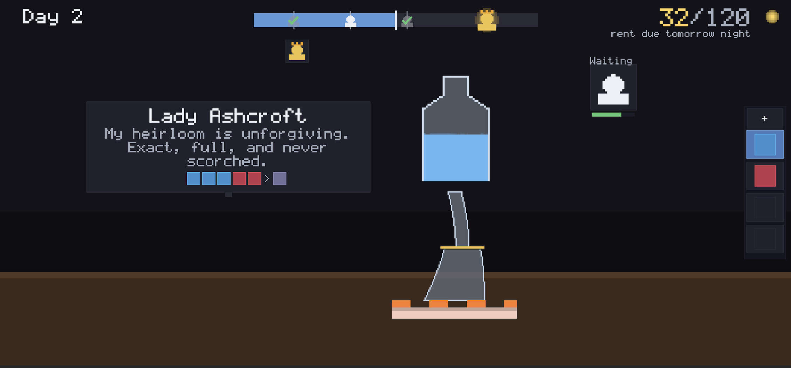
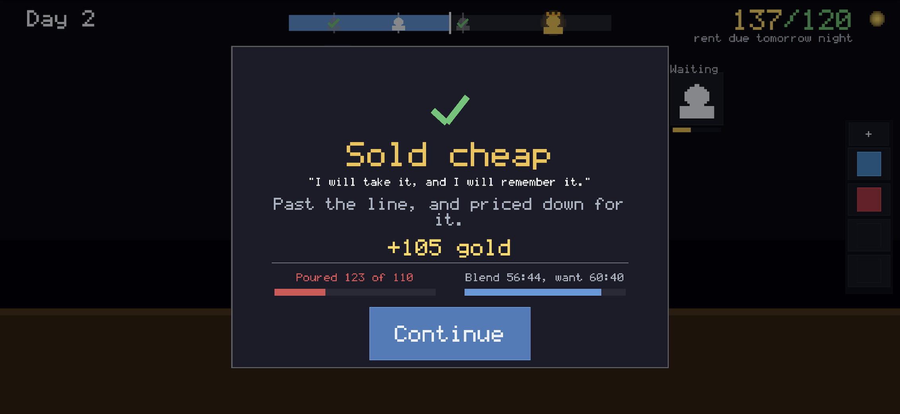
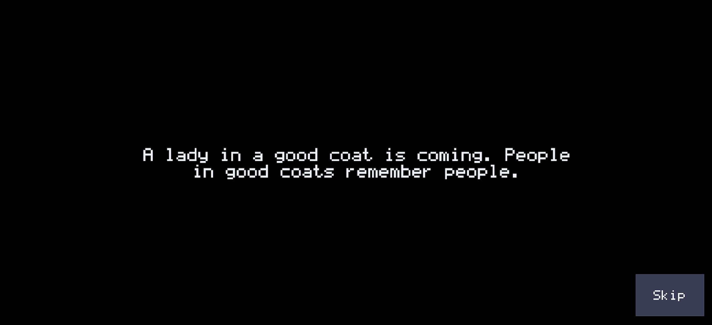

Alcherogue
An alchemy shop game about pouring by eye.
There are no measurements. The liquid’s colour is the instrument, and the stream accelerates the longer you pour. Every sale asks the same question at a different scale: take the sure thing, or reach for something better?
Game design · Tactile systems · Economy · Perception · Prototyping
Read the design process
The system
Recipes name ingredients but never reveal their proportions. Potion quality is graded rather than passed or failed, so near misses still sell for less. Rent is due every third day and keeps rising, while stock purchases, haggling, and auctions make each coin a decision.
Pouring and haggling share one hold-and-release input with an accelerating cost. The same learned skill applies to both liquid and money.
Two designs I cut
The first version was a quiz roguelite. After nine versions, I cut it because a question becomes spent once its answer is known; adding more questions increased content, not depth.
The replacement was a deduction game with scrambled jar labels. A short Python script proved that every four-jar arrangement could be solved in exactly two pours with the same strategy. Random labels changed the instance, but not the pattern, so I cut that version too.
What the numbers changed
- Economy simulations exposed free stock, predictable shortages, and rent that arrived too late.
- Precision varied by 3.1× between recipes, while visible hue feedback varied by 4.8×.
- One recipe changed by only 2.8° of hue, making memory-based judgement unfair rather than difficult.
- A browser prototype made accelerating flow feel clearly better than constant flow.
Design method
I combined playable prototypes, small verification scripts, perceptual testing, MDA, game-feel analysis, and comparison with Potion Craft, Potionomics, Recettear, Strange Horticulture, and Moonlighter. The final direction puts the difficulty in the player’s hands—the gap I found in the genre, and also its main risk for players who come to shop games to relax.



